Owner's Operating Manual
Run a one-truck chimney company like a ten-truck company.
Sales, inspections, partners, canvassing, marketing, Google, hiring, money and the CRM that runs it all. Written for Andrew Paterini, and for every person he hires.
Contents
What is in this manual
Read chapter 1 once. Keep chapters 4 to 8 in the truck. Hand chapter 6 to every new hire on day one.
- 01The First Chimney standard
- 02The business at a glance
- 03Your day, week and month
- 04The CRM: how leads flow
- 05Sales: phone, follow-up, estimates
- 06On-site inspection guide
- 07Partner playbook and scripts
- 08Door knocking and canvassing
- 09Marketing materials before snow season
- 10Content and social media
- 11Google Business Profile and reviews
- 12Networking: groups, shows, conferences
- 13Hiring and training
- 14Money: pricing, cash and numbers
- 15The year at a glance
- 16Templates: texts, emails, voicemails
- 17Your first 30 days
- 18Start it right: licensing, insurance, admin
- 19Grow it: stages and timeline
- 20Interviews, scorecards, references
- 21Pay and commission plans
How this connects to everything else. The website (firstchimneycontracting.com) captures leads. GoHighLevel (the CRM) tags them, follows up and reminds you. This manual is what you do. When you move a card in the CRM, the automations do the rest.
Chapter 01
The First Chimney standard
Big companies win on volume. First Chimney wins on trust. These five promises are the whole strategy.
- The owner answers. Homeowners talk to Andrew, not a call center.
- We show what we see. Photos of every finding, explained in plain English.
- Quote first, always. Nothing is done without written approval.
- Leave it cleaner. Drop cloths down before any tool comes out.
- Honest, even when it costs us. If it does not need fixing, we say so.
Speed to the call, proof on the roof, and a reminder every year. That is the business.

Credentials you can point to
F.I.R.E. Certified Technician. Andrew is listed by name in the official F.I.R.E. Service directory (f-i-r-e-service.com, Virginia certified technicians). When a homeowner or realtor asks, send them the link. Verifiable beats impressive.
10 years in the chimney trade, 25 years combined crew experience. Say it the same way every time, everywhere.
Never do: invent reviews, borrow reviews from another company, offer anything in exchange for a review, scare people into repairs, or claim a certification you do not hold. One shortcut can undo a year of trust.
Chapter 02
The business at a glance
Services
Chimney inspection (Level 1 and 2) · Chimney cleaning · Relining · Masonry and rebuilds · Leak repair and waterproofing · Caps and chase covers · Crowns · Fireplace repair · Dryer vent cleaning · Fireplace and insert design and installation
Service area
Virginia, New Jersey, Connecticut and Massachusetts. Main line (757) 589-0783. Website firstchimneycontracting.com.
Offers
| Offer | What it is | Where it lives |
|---|
| $199 holiday special | Cleaning + inspection. The front door to repairs and yearly customers. | /199 · popup · coupon |
| Give $25, get $25 | Friend gets $25 off with NEIGHBOR25; referrer gets $25 off after the friend's first job. Not combinable. | /refer |
| Free chimney health check | 10-question online check. Scores Urgent / Soon / Good and sends you the answers. | /check |
| Partner program | 10% partner rate for realtors, inspectors, contractors, property managers and insurance pros, plus priority scheduling. | /partners |
| Free second opinion | Homeowners send another company's quote for an honest review. | /how-to-choose-a-chimney-company |
Short links (for print, the truck and texts)
/check/199/refer/review/realtors/jobs/remind/partners/inspectors/contractors/landlords/insurance/guides/design/shop
All redirect from firstchimneycontracting.com/… Use them as QR codes on print and the truck.
The online tools customers use
- Build Your Fireplace: customers pick a real model, customize it and download a branded PDF guide. Designs arrive in the CRM with the full spec.
- Fireplace shop: 230 real products. Customers request pricing, which arrives as a Fireplace Projects lead.
- Partner pages, careers and the health check: every form feeds the right CRM pipeline (Partners, Recruiting or Jobs).
Chapter 03
Your day, week and month
Solo owners fail from chaos, not lack of skill. This rhythm takes about 30 minutes a day.
Every morning (10 minutes)
- Open the LeadConnector app. Clear every unread conversation.
- Call back anything in New Lead. Under 15 minutes wins jobs.
- Confirm today's appointments are on the calendar.
- Load the truck for today's jobs (caps? mortar? liner kit?).
Between jobs
- Return calls and texts from the truck, not at night.
- Move each job card the moment it changes. The automations depend on it.
Every evening (15 minutes)
- Upload today's job photos and findings to each opportunity.
- Send estimates while the visit is fresh. Move to Estimate Sent.
- Mark finished jobs Job Complete (fires the review request and yearly reminder).
Every Monday (10 minutes): the scorecard
| Number | Why |
|---|
| New leads | Is marketing working? |
| Minutes to callback | Speed wins. Goal: under 15. |
| Appointments booked | Leads becoming visits |
| Estimates sent / approved | Close rate |
| Average ticket | Repair mix and pricing |
| Cash collected | Not promises, cash |
| Reviews received | Tomorrow's leads |
| Annual Reminder list size | Next year's revenue |
If a number drops two weeks in a row, that is where your time goes this week.
First Monday of the month (45 minutes)
- Money review (chapter 14): revenue, costs, profit, cash in the bank, tax set-aside.
- Pick next month's one marketing push (chapter 15).
- Thank your top 3 referral partners with a text or coffee.
Chapter 04
The CRM: how leads flow
Every form on the website lands in GoHighLevel with tags, filled-in fields and an opportunity in the right pipeline. You never retype a lead.
Where each form goes
| Website form | Tags it gets | Pipeline · stage |
|---|
| $199 holiday, contact, service request | Website Lead, Holiday Special - $199 | Jobs · New Lead |
| Chimney health check | Website Lead, Health Check: Urgent / Soon / Good | Jobs · New Lead |
| Refer a friend | Website Lead, Referral | Jobs · New Lead |
| Build Your Fireplace, shop quote | Fireplace Design Request, Product Quote Request | Fireplace Projects · New Design Request |
| Realtor / inspector / manager | Referral Partner, Partner: Realtor… | Partners · New Partner |
| Job application | Recruiting, Job Applicant, Applied: … | Recruiting · Applied |
| Testimonial | Testimonial | (none) |
| Yearly reminder | Annual Reminder | (none) |
The Jobs pipeline, and what you do at each stage
| Stage | Means | Your move | What fires automatically |
|---|
| New Lead | Just came in | Call within 15 min | Instant text + email to lead, alert to you, reminder at 10 min |
| Contacted | You talked | Book it | Tag "Contacted" stops the nag |
| Scheduled | On the calendar | Show up | Confirmation, 24 h and 2 h reminders |
| Inspected / Cleaned | Visit done | Photos + findings in the card | |
| Estimate Sent | Quote delivered | Answer questions | Day 2, 5, 10 follow-ups; Lost at 30 days |
| Approved | They said yes | Order materials, schedule | |
| Job Complete | Paid and done | Mark it the same day | Review request, Past Customer, yearly reminder |
| Lost | Not now | Pick a lost reason | Seasonal reactivation later |
The automations working for you
- 01 New lead: instant reply, owner alert, 10-minute nag
- 02 Stage tags: keeps tags in sync with the pipeline
- 03 Holiday $199: 3 polite follow-ups, stops on reply
- 04 Health check router: urgent alert, good → yearly list
- 05 Appointments: confirm, 24 h and 2 h reminders
- 06 Estimates: follow-ups, then Lost at 30 days
- 07 Job complete: review request, yearly reminder
- 08 Annual reminder: one text a year, forever
- 09 Testimonial: thank-you, alert to publish
- 10 Referral: thank the referrer, alert you
- 11 Partners: intro email, call task, monthly value
- 12 Applicants: auto-reply, review task
- 13 Missed call: text-back within seconds
- 14–17 Campaigns: fall rush, spring masonry, pre-snow, reactivation, door knock follow-up
The one rule: the CRM is only as smart as the stage a card is in. Move cards the moment things change and the system runs your follow-up for you.
Chapter 05
Sales: phone, follow-up, estimates
You are not "selling chimneys". You are helping a family use their fireplace safely. Act like it and the sales take care of themselves.
Inbound call script
Answer: "First Chimney, this is Andrew."
Listen: "What's going on with the chimney?" (Let them talk. Take notes in the app.)
Qualify: "What do you burn, and how often?" · "When was it last cleaned or inspected?" · "Noticed anything: smoke, smell, water, debris?" · "What's the address?"
Recommend: "The best place to start is a cleaning and inspection. That way I can tell you exactly what's going on, with photos."
Book: "I have Tuesday morning or Thursday afternoon. Which works better?"
Set expectations: "I'll text you a confirmation. Please don't burn for 24 hours before so it's cool."
Calling back a website lead
"Hi, is this Sarah? This is Andrew Paterini with First Chimney. You filled out a request on our website a few minutes ago about your chimney. Is now a good time for two minutes?"
Then use the qualify questions. If they took the health check, say what they told you: "I see you mentioned some black flakes in the firebox. That's usually creosote, so let's get it cleaned and looked at."
Objections, answered honestly
| They say | You say |
|---|
| "How much for a repair?" | "I'd be guessing without seeing it, and I don't want to quote you wrong. The inspection tells us exactly what it needs, and you get photos either way." |
| "Another company quoted less." | "Could be the right call. Can I see what they quoted? I'll tell you honestly if it covers the same work. If it does, go with them." |
| "I just want a cleaning." | "Absolutely. I look the whole system over while I'm there anyway, so you'll know if anything else needs attention. No pressure to fix anything." |
| "I need to think about it." | "Of course. The photos and estimate are in your email. Anything I can clear up now? I'll check in Thursday." |
| "Is it really necessary?" | Show the photo. Sort it: safety now, this year, can wait. Let them decide. Honesty here is the best sales tool you have. |
| "Somebody called offering a $49 cleaning." | "Be careful with those. Many make it up with scare tactics on the roof. Whatever you decide, ask for photos and a written quote before any repair." |
The estimate presentation
- Sit down with them. Phone in hand, photos up.
- Good news first. "Your firebox and damper are in good shape."
- Each issue in one sentence: what it is, why it matters, what happens if it waits.
- Sort into three groups: Safety now · This year · Monitor.
- Offer options: repair-only and full fix. People like choosing.
- Ask: "Which option feels right to you?" Then stop talking.
- Yes? Take the deposit (masonry and liners) and book it. Not yet? Move the card to Estimate Sent. The system follows up.
Chapter 06
On-site inspection guide
For Andrew as a refresher, and for every new technician on day one. Consistency is what makes a report trustworthy.
Before you knock
- Read the CRM note: health check answers, what they noticed, fireplace type.
- Park so you don't block the driveway. Truck clean.
- Drop cloths, vacuum, camera, ladder, PPE, flashlight, moisture meter ready.
At the door
- Introduce yourself by name. Confirm what they asked for.
- Ask about pets, kids and anything they want you to look at.
- Ask when the fireplace was last used (must be cool).
Safety (non-negotiable)
- Ladder at a 4:1 angle, 3 feet above the roof edge, tied off.
- Fall protection on steep or wet roofs. No roof work in ice, high wind or lightning.
- Respirator and eye protection for soot and creosote.
- Gas appliances: shut off and verify before working on them.

Level 1 inspection checklist
Exterior and roof
- Crown: cracks, overhang, drip edge
- Cap and spark arrestor: present, rusted, mesh intact
- Flashing: lifted, rusted, sealed
- Brick and mortar: spalling, open joints, efflorescence
- Height and clearance from roof and nearby structures
- Chase cover (prefab): rust, standing water
Interior
- Firebox: cracked brick, gaps in joints
- Damper: opens, closes, seals
- Smoke chamber: rough or unparged, creosote
- Flue: buildup, tile cracks, gaps (camera)
- Hearth extension and clearances to combustibles
- Smoke and CO alarms present and working
Recommend a Level 2 (camera through the whole flue) when: the home is being sold, there was a chimney fire or storm or earthquake event, the appliance or fuel is changing, or a Level 1 finds something you can't fully see.
The standard photo set (every job)
1 House front2 Chimney, full3 Crown4 Cap5 Flashing6 Masonry close-up7 Firebox8 Damper9 Smoke chamber10 Flue camera11 Every problem, with scale12 Clean work area after
The 10-minute walkthrough
"Here's what I found. Good news first: [good items]. Now, three things. This one is a safety issue: [photo, one sentence]. This one should be done this year: [photo]. And this one we just keep an eye on: [photo]. I'll put it all in writing with prices. Take your time, nothing happens without your OK."
Before you leave
- Area cleaner than you found it. Show them.
- Upload photos to the opportunity's Job Photos field and type findings in Findings.
- Set Inspection Level and Job Type. Move the card. Ask: "Know anyone else with a fireplace?"
Chapter 07
Partner playbook and scripts
Ten good partners can fill a calendar. These people see chimney problems every week and need someone reliable to call.
| Partner type | Why they need you | What you give them |
|---|
| Realtors (listing and buyer agents) | Chimney surprises kill deals and delay closings | Fast Level 2 inspections, plain-English reports, /realtors page for clients |
| Home inspectors | They flag chimneys but don't inspect inside the flue | A trusted "refer to a specialist" name with credentials they can verify |
| Roofers | Chimney flashing and masonry around their roofs | Masonry and crown work done right, so their roof doesn't leak |
| HVAC, plumbers, hearth dealers | Venting, liners, appliance changes | Relining and inspections when fuel or appliance changes |
| Property managers | Many units, liability, annual checks | Scheduled annual inspections, one invoice, photo reports |
| Insurance agents | Fire and water claims, risk | A credible inspector to recommend |
| Painters, handymen, remodelers | They see stained ceilings and crumbling chimneys | Someone to hand chimney jobs to |
Realtor script (call or drop-in)
"Hi, I'm Andrew Paterini, owner of First Chimney and a F.I.R.E. Certified Technician. I know chimney issues can hold up a closing. When one comes up in your deals, I can usually get out quickly and give you a plain answer with photos. The national standard calls for a Level 2 inspection at every sale, and most home inspectors only look from the outside. Can I send you a link you can forward to clients? It's firstchimneycontracting.com/realtors. Text me anytime with an address and a deadline."
Home inspector script
"I'm Andrew with First Chimney. When your report says 'recommend evaluation by a qualified chimney professional,' I'd love to be that name. I do camera inspections inside the flue, send photos, and I'll copy you on what I find so your report looks good. My certification is listed in the F.I.R.E. directory if your clients ask."
Home improvement contractor script (roofers, remodelers, HVAC)
"You're on roofs and in houses every day. When you see a chimney that needs work, I'd like to be your go-to. I'll stay in my lane, do it right, and send the customer back to you for anything that's yours. Want to swap cards and keep each other in mind?"
Realtor office talk (10 minutes at a sales meeting)
- Who you are, credential, 10 years.
- Three chimney problems that kill deals (flue cracks, leaks, missing liner) with photos.
- What a Level 2 is and why NFPA 211 calls for it at sale.
- How to reach you: text, address, deadline. Hand out cards with the /realtors QR code.
Partner pages and guides (already built)
Each industry has its own page with the 10% partner rate, a call request form and a free 8-page guide: realtors (/realtors), home inspectors (/inspectors), contractors (/contractors), property managers (/landlords) and insurance (/insurance). Print the guides as leave-behinds. Every guide request lands in the CRM's Partners pipeline.
Keep partners warm
- Answer partner calls first. Always.
- Text a thank-you after every referral, and report back on how it went.
- One useful email a month (the CRM sends it). Coffee once a quarter with your top three.
- Track every partner in the Partners pipeline. Move them to Active Partner after the first referral.
Chapter 08
Door knocking and canvassing
The fastest way to fill a slow week, if it's done politely and in the right places.
Where and when
- "Five around" every job: the 5 houses on each side and across the street from a job you're doing today. "We're working at your neighbor's" is the best opener there is.
- Neighborhoods with chimneys: older brick homes, visible chimneys, woodpiles.
- Best season: late August to December (pre-snow), and March to May for leaks and masonry.
- Best hours: weekdays 4 to 7 pm, Saturdays 10 am to 4 pm.
Rules
- Check each town's soliciting rules. Some require a permit. Get it.
- Never knock on "No Soliciting" homes. Leave nothing there either.
- Never put anything in a mailbox (federal law). Use door hangers.
- Wear the company shirt. Carry ID and cards.
What to carry
- Door hangers with the /check QR code and $199 offer
- Business cards and the referral card (NEIGHBOR25)
- Phone with the CRM app open
- Photos on your phone of common problems
The 15-second door script
"Hi, I'm Andrew with First Chimney. We're doing a chimney job for your neighbors at [house], so I'm letting folks on the street know we're here this week. Do you use your fireplace at all? … When was the last time someone looked at it?"
Interested: "I can take a quick look from the ground right now, free, and if it needs anything I'll get you on the schedule while I'm in the area."
Not now: "No problem. Here's a card. There's a free 2-minute chimney check on the back. Have a good one."
Log every door
Interested or booked? Create the contact in the CRM app and add tag Door Knock. The system texts them a thank-you with the health check link and offer. Not home? Leave a hanger. Track three numbers per outing: doors knocked · conversations · appointments. A good day is 1 appointment per 10 conversations.
Hiring canvassers later: pay per conversation logged or per appointment that shows up, never per sale. It keeps them honest and polite. The careers page already lists the Canvasser role.
Chapter 09
Marketing materials before snow season
Order in August. Have everything in the truck by Labor Day. The fall rush is when people think about chimneys.
| Piece | What it says | Where it goes | Order by |
|---|
| Door hangers | "Is your chimney ready for winter?" · $199 cleaning + inspection · /check QR · phone | Five-around every job, canvassing | Aug 15 |
| Yard signs | "Chimney work by First Chimney · (757) 589-0783" | Every job (with permission), especially rebuilds | Aug 15 |
| Truck magnets or wrap | Logo, phone, website, "F.I.R.E. Certified" | Every truck | Now |
| Business cards | Andrew's name, credential, phone, /check QR on back | Everyone, everywhere | Now |
| Referral cards | "Give $25, get $25 · code NEIGHBOR25" | Leave 3 at every finished job | Aug 15 |
| Fridge magnet | "Next chimney check due: ____" with phone | Fill in and leave at every job | Aug 15 |
| Invoice insert | Review request (/review) + referral offer | Every invoice and receipt | Aug 15 |
| Past-customer postcard | "Time for your yearly chimney check" + book-early note | Every past customer, mailed late August | Aug 1 |
| Realtor leave-behind | One page: Level 2 at sale, credential, /realtors QR | Realtor offices and open houses | Sept 1 |
Pre-snow season campaign (September to November)
- Late August: postcards to past customers, plus the CRM "Fall Rush" text to everyone tagged SMS Consent: Yes (add tag Campaign: Fall Rush).
- September: door hangers around every job. Realtor office talks before winter listings.
- October: Fire Prevention Week posts. Offer a talk at a local fire house or HOA meeting.
- November: the $199 holiday special: website popup, landing page, social creative (all built), and a Campaign: Pre-Snow text.
Every printed piece points to one action with a QR code. Use the short links so you can see which piece works (the CRM records the landing page on every lead).
Chapter 10
Content and social media
Real beats polished. One job-site post a week does more than a fancy ad.
The weekly rhythm
- Monday: a before and after (with the homeowner's OK)
- Wednesday: a 30-second "here's what I found" video
- Friday: a tip, a seasonal reminder or a review
Post to Google Business Profile, Facebook, Instagram and Nextdoor. The CRM's social planner can schedule all four at once.
Photo and video tips
- Shoot vertical for video, horizontal for Google.
- Get the problem and the fix from the same angle.
- Never show house numbers, faces or cars without permission.
- Natural light, wipe the lens, hold still.
30 post ideas
- What creosote looks like
- Crown crack up close
- Rusted cap vs new cap
- Before and after rebuild
- Why we use drop cloths
- What's a Level 2?
- Animal nest we removed
- Water stain? Here's why
- Wet vs seasoned wood
- Flashing failure
- Liner going in
- Damper that won't close
- Chimney fire signs
- CO alarm reminder
- Day in the life
- Meet Andrew
- Tool of the week
- Myth: gas needs no check
- Spalling brick explained
- Holiday $199 offer
- Customer review
- Referral shout-out
- Fire Prevention Week
- Spring leak check
- Dryer vent danger
- Insert install
- Fireplace design idea
- Inspection camera view
- Truck clean-up routine
- Thank you, partners
Caption formula
[What this is, one line] → [why it matters, one line] → [what to do] → "Free 2-minute chimney check: firstchimneycontracting.com/check"
Chapter 11
Google Business Profile and reviews
For a local service business, the Google profile brings in more calls than the website. Treat it like a second website.
Setup checklist
- Primary category: Chimney sweep. Add: Chimney services, Masonry contractor, Fireplace store (if selling units).
- Service-area business: hide the home address, list main cities in each state.
- Phone (757) 589-0783, website, hours (only once confirmed).
- Add every service with the description from the website.
- Upload 20+ real photos: truck, Andrew, jobs, before and afters.
- Logo and cover photo.
- Business description using the website's About text.
- Ask and answer 5 common questions (pricing, area, $199, Level 2).
- Turn on messaging and connect it to the CRM.
- Copy the review link into the CRM (custom value "Review Link") and the website.
- Then claim Bing Places (import from Google) and Apple Business Connect.
- Submit the sitemap in Google Search Console.
Weekly habits
- One post a week (the Monday before and after works great).
- Five new photos a week.
- Reply to every review within 48 hours.
Reviews: the rules that keep you safe
Do: ask every customer, happy or not (the CRM does this when you mark Job Complete). Make it easy with the link. Thank people.
Never: offer discounts or gifts for reviews, ask only happy customers, write reviews for anyone, or post reviews from another company. Google removes them, and the FTC fines businesses for fake or incentivized reviews.
Reply templates
5 stars: "Thank you, [Name]. It was a pleasure working on your chimney in [Town]. Enjoy the fireplace this winter. Andrew"
Critical: "[Name], thank you for the honest feedback. I'm sorry we fell short on [issue]. I'd like to make it right. Please call me directly at (757) 589-0783. Andrew"
Chapter 12
Networking: groups, shows, conferences
Verified November 2026. Confirm dates and costs on each organization's site before registering.
Trade associations and certifications
| Who | Why join | Key dates and links |
|---|
| National Chimney Sweep Guild (NCSG) | The national trade group: education, credentials (CCP, CCR, CCJ), networking, insurance programs. | 2027 Convention & Trade Show, April 6–10, 2027, Hershey Lodge, Hershey, PA (50th anniversary). ncsg.org |
| Mid-Atlantic Chimney Association (MACA) | Regional sweeps (VA, MD, PA). Seminars, workshops, the Virginia chimney sweep apprenticeship. Formerly the Virginia Association of Chimney and Hearth Professionals. | Ask NCSG's state and regional associations page for current contacts. |
| National Fireplace Institute (NFI) | Gas, Woodburning and Pellet Specialist certifications. All three = Master Hearth Professional. Valuable for insert and stove installs. | nficertified.org. Review courses and on-site exams at HPBExpo. |
| HPBExpo (Hearth, Patio & Barbecue Expo) | The hearth industry's trade show: manufacturers, dealer pricing, NFI exams. | March 3–6, 2027, Music City Center, Nashville, TN. Trade only. hpbexpo.com |
| CSIA | Another widely recognized sweep certification some homeowners look for. | csia.org. Optional, alongside F.I.R.E. |
Local (Hampton Roads and beyond)
| Who | Why | How |
|---|
| Coastal Virginia Association of REALTORS® (formerly Hampton Roads REALTORS® Association) | Affiliate membership puts you in the directory realtors use, and in the room at their events. | Affiliate membership; sponsorship packages start around $3,000 and include affiliate dues. coavar.com |
| Real Producers (Hampton Roads) | Magazine for top-producing agents, with a preferred partner program and events. | realproducersmagazine.com |
| Mid-Atlantic Home & Outdoor Living Show | Run by the Coastal Virginia Building Industry Association. Booth = homeowners planning projects. | Jan 16–17, 2027, Virginia Beach Convention Center. midatlantichomeshow.com |
| Hampton Roads Home Show | Homeowner traffic in the Peninsula market. | Feb 27–28, 2027, Hampton Roads Convention Center. hamptonvahomeshow.com |
| Coastal Virginia Building Industry Association | Builders and remodelers who need a chimney sub. | Associate membership |
| BNI chapter and Chamber of Commerce | Weekly referral group; one seat per trade, so you'd be "the chimney guy". | Visit two chapters before joining |
| Home inspector groups (ASHI, InterNACHI local chapters) | Inspectors refer chimney evaluations every week. | Offer a 20-minute talk on what to flag |
| Property manager groups (NARPM, IREM local chapters) | Annual inspections across many units. | Vendor membership |
| Local fire departments | Fire Prevention Week (October) events and community talks. | Offer a free safety talk |
| Nextdoor and town Facebook groups | Neighbors asking "who do you use?" | Claim the Nextdoor business page; answer helpfully, never spam |
Each new state (NJ, CT, MA) has its own realtor associations, home shows and chimney guilds. Repeat this table for each market as it grows.
Chapter 13
Hiring and training
The careers page lists 10 roles and collects applications with resumes straight into the Recruiting pipeline.
The hiring roadmap
| When | Hire | Why |
|---|
| Calendar full 3+ weeks out | Helper / apprentice | Doubles daily jobs, safer on roofs |
| Missing calls while on roofs | Part-time office manager / scheduler (or an AI phone assistant first) | Speed to lead without leaving the roof |
| Fall rush every year | Seasonal canvasser | Fills the calendar near active jobs |
| Masonry backlog | Mason + laborer | Bigger tickets, rebuild season |
| Two trucks | Lead technician | Second crew, Andrew moves to sales and inspections |
The process
- Apply on the website (any time). The CRM auto-replies and creates a Recruiting card.
- 10-minute phone screen: Hands-on work you've done? · Heights and ladders? · Driver's license? · A time you were careful in someone's home? · When can you start?
- Paid working interview: half a day on a real job. Watch for: on time, asks questions, careful, doesn't stand around.
- Offer in writing. Before day one: confirm workers' comp and liability cover employees; payroll and paperwork through an accountant or payroll service.
- Move every card. Send a polite "not a fit" within a week. Nobody gets ghosted.
12-week training plan
Write down every "here's how we do it" moment. Those notes become the next chapter of this manual.
| Weeks | Learns to |
|---|
| 1–2 | Protect the work area, carry and set ladders, run the vacuum, clean up, safety rules |
| 3–4 | Sweep with supervision, take the 12-photo set, greet customers at the door |
| 5–8 | Sweep solo, help with caps and crowns, mix mortar, read the inspection checklist |
| 9–12 | Assist on liners and rebuilds, spot common problems and explain them to Andrew |
Chapter 14
Money: pricing, cash and numbers
Price from your real costs, not from the cheapest competitor. Fill in the blanks once a year.
Step 1: cost of one billable hour
| Monthly fixed costs (truck, fuel, insurance, phone, software, tools, marketing) | $______ |
| Owner pay target per month | $______ |
| Billable hours per month (driving and quoting are not billable) | ______ h |
| Cost per billable hour = (costs + pay) ÷ hours | $______ |
Step 2: price a job
| Hours (on site + drive) × cost per hour | $______ |
| Materials | $______ |
| Disposal, rentals, permits | $______ |
| Profit margin (pick a target) | $______ |
| Price | $______ |
Cash rules
- Deposits on masonry and liner jobs, covering materials. Written on the estimate.
- Get paid on the spot: send a CRM invoice or text-to-pay before you leave the driveway.
- Tax account: move a fixed percentage of every payment to a separate account the day it lands. Ask your accountant for the number.
- Reserve: build up one month of fixed costs before buying non-essential gear.
- The $199 special is a front door, not a profit center. Track how many turn into repairs and yearly customers. That's its real return.
Monthly money review
| Look at | Ask |
|---|
| Revenue by service | What's growing? What's not worth doing? |
| Average ticket | Are inspections turning into repairs? |
| Cost of each lead source | Which marketing pays for itself? |
| Accounts receivable | Who hasn't paid? Follow up this week. |
| Cash, tax account, reserve | Are we safe for three slow months? |
Chapter 15
The year at a glance
| Month | Focus | Do this |
|---|
| January | Peak burning | Chimney fire safety posts, fast response. Mid-Atlantic Home Show (VB, Jan 16–17, 2027). |
| February | Plan the year | Hampton Roads Home Show (Feb 27–28, 2027). Set prices, budget, hiring plan. |
| March | Leaks and masonry | Spring Masonry campaign. HPBExpo (Mar 3–6, 2027) for hearth products and NFI exams. |
| April | Learn and network | NCSG Convention (Apr 6–10, 2027). Crown and cap season begins. |
| May–June | Rebuilds and caps | Before and afters. Realtor spring market talks. |
| July | Prepare | Order fall marketing materials. Hire seasonal help. |
| August | Book early | Postcards and Fall Rush text to past customers. |
| September | Rush begins | Door hangers around every job. Realtor offices. |
| October | Fire Prevention Week | Fire house talks, safety posts, yearly reminders firing. |
| November–December | Holidays | $199 holiday special, Pre-Snow campaign, referral push. |
Chapter 16
Templates: texts, emails, voicemails
Most of these already run automatically in the CRM. Use them by hand when you need them.
Missed your call
"Sorry I missed you. This is Andrew with First Chimney, probably on a roof right now. What can I help you with? I'll call back as soon as I'm down."
On my way
"Hi [Name], Andrew from First Chimney. On my way, about 20 minutes out."
Estimate sent
"Hi [Name], your estimate and photos are in your email. Happy to walk through any of it on the phone."
Review request
"Thanks for having me out today. If you were happy with the work, a quick Google review helps a small business like mine more than you know: [link]"
Referral thank-you
"Thank you for sending [Friend] my way. I'll take great care of them, and your $25 credit is on your account for next time."
Voicemail: website lead
"Hi [Name], Andrew Paterini with First Chimney returning your chimney request. I'll text you too, so reply whenever is easy. My number is 757-589-0783."
Voicemail: past customer, yearly
"Hi [Name], Andrew from First Chimney. It's been about a year since I looked at your chimney. I'm booking fall appointments now and wanted to give you first pick. 757-589-0783."
Door knock follow-up
"Great meeting you today, [Name]. Here's the free 2-minute chimney check: firstchimneycontracting.com/check. Text me anytime. Andrew"
Partner thank-you
"Thanks for the referral on [address], [Name]. Inspection's done, the report went to your client, and I copied you. I appreciate you."
Unhappy customer
"[Name], I'm sorry about [issue]. I want to make this right. Can I come back [day] to take care of it at no charge?"
Chapter 17
Your first 30 days
Do these in order. Each one makes the next one work better.
Week 1: the foundation
- Log into the CRM and install the LeadConnector app on your phone
- Connect a phone number in the CRM (enables texting and missed-call text back)
- Finish texting registration (A2P), required before texts go out
- Create the Google Business Profile, start verification
- Submit a test on every website form and watch it arrive
Week 2: get found
- Upload 20 photos to Google, add services and the description
- Put the review link into the CRM and website
- Claim Bing, Apple, Yelp, Nextdoor, Facebook (same name and phone everywhere)
- Order business cards, referral cards and door hangers
Week 3: fill the pipeline
- Text past customers the /review link (testimonials)
- Import past customers into the CRM with tag Past Customer
- Call 10 realtors and 5 home inspectors (chapter 7)
- Door knock five-around on every job this week
Week 4: make it a habit
- Run the Monday scorecard
- Post 3 times on Google and Facebook
- Visit one BNI chapter or realtor office meeting
- Decide your first hire trigger (chapter 13)
You don't have to do it all alone.
The website captures the leads, the CRM follows up and reminds, and this manual tells you the rest. Your job: answer fast, do great work, show people what you see, and ask for the next one. Do that every day and First Chimney becomes the name every neighbor gives.
Questions about the website or CRM: Summit Marketing Group, dangill@summitmarketinggroup.co
Chapter 18 · Part 2: Building the company
Start it right: licensing, insurance and admin
Get these in place once and they protect everything else. Requirements change, so confirm each item with the state agency and an accountant or attorney.
Business setup checklist
- Business entity (most trades use an LLC). Operating agreement filed.
- EIN from the IRS (free at irs.gov).
- Business bank account. Never mix personal and business money.
- Bookkeeping software connected to the bank (QuickBooks or similar).
- Accountant who works with contractors: quarterly estimated taxes, sales tax on materials, payroll.
- Written estimate and invoice templates with terms (deposits, payment due, warranty).
- General liability insurance, with the certificate ready to send to partners and property managers.
- Commercial auto for every truck.
- Workers' compensation before the first employee starts.
- Tools and equipment coverage (inland marine).
- Ask the agent about coverage for work on roofs and for fire-related claims.
Contractor licensing by state (verify before working there)
| State | What to check | Who |
|---|
| Virginia | A contractor license is generally required for jobs of $1,000 or more (Class C, B or A by job size and yearly volume). | Virginia DPOR, Board for Contractors |
| New Jersey | Home Improvement Contractor registration for residential work. | NJ Division of Consumer Affairs |
| Connecticut | Home Improvement Contractor registration for residential work. | CT Department of Consumer Protection |
| Massachusetts | Home Improvement Contractor registration; a Construction Supervisor License may apply to structural work. | MA Office of Consumer Affairs and Business Regulation |
Also check local business licenses, permits for rebuilds and liners, and soliciting permits for door knocking in each town.
Safety is a business system
- OSHA construction rules generally require fall protection at 6 feet. Use it, train it, and document it.
- Ladder inspections, respirators for soot and creosote, and eye protection on every job.
- A one-page safety rule sheet signed by every hire (the Team Handbook includes it).
Chapter 19
Grow it: the stages and the timeline
Grow on triggers, not hopes. Hire when the numbers say so, and put the system in place before the person arrives.
| Stage | Trigger to move on | What you build in this stage |
|---|
1. Solo operator
Months 0–6 | Calendar booked 3+ weeks out, or saying no to work | Website, CRM and automations, Google profile, 25+ reviews, yearly reminder list, 5 active partners, pricing worksheet, this manual |
2. Owner + helper
Months 6–12 | Two people stay busy 4+ days a week | Training plan, safety sheet, truck checklist, photo standard. Andrew does sales and inspections; helper sweeps and preps. |
3. Office support
Year 1–2 | Missed calls or slow callbacks show up in the scorecard | Part-time scheduler or AI phone assistant, call scripts, CRM stage discipline |
4. Two trucks
Year 2 | Helper is ready to run jobs alone; backlog persists | Lead technician, second truck, job costing per truck, weekly crew meeting |
5. Owner off the tools
Year 2–3 | Andrew's time is the bottleneck on estimates | Inspection and sales rep (estimator), commission plan, estimate templates, ride-alongs |
6. New markets
Year 3+ | Steady demand from NJ, CT or MA leads | Local technician or crew per market, state licensing, local partners, city pages already live |
Your first-year timeline
| Quarter | Goals |
|---|
| Q1 | CRM live, Google profile verified, 10 reviews, 5 partners, all marketing pieces printed |
| Q2 | 25 reviews, masonry season pipeline, first hire decision, home show booth |
| Q3 | Helper trained, fall rush campaign, realtor talks, yearly reminder list 100+ |
| Q4 | Holiday $199 campaign, referral push, plan year 2 (prices, budget, hires) |
Every stage starts the same way: write down how you do the job, then hand it to someone. If it is not written down, it is not a system.
Chapter 20
Interviews, scorecards and references
Hire for reliability and character. Skills can be taught. Bad habits cannot.
The hiring stages
- Application on the website (Recruiting pipeline, stage Applied). Review within 3 days.
- 10-minute phone screen (stage Phone Screen). Five questions below.
- In-person interview, 30 minutes, with the scorecard.
- Paid working interview, a half day on a real job (stage Working Interview).
- Two reference calls, then a written offer (stage Offer). Background and driving record checks with written consent.
- First day: safety sheet, handbook, truck walk-through, shadowing (stage Hired).
Questions for every role
- Tell me about the last job where you had to show up early or stay late.
- What would you do if you broke something in a customer's house?
- How do you feel about heights, ladders and working outside in January?
- Tell me about a time a boss corrected you. What did you do?
- Why this trade, and why now?
- Technicians: Walk me through how you inspect a flue. What makes you recommend a Level 2?
- Sales reps: A homeowner says "another company quoted less." What do you say?
- Canvassers: Knock on this door (role-play). The owner says "not interested."
- Office: Two customers want the same Saturday slot. How do you handle it?
- Masons: How do you form a crown so it sheds water?
Scorecard (1 to 5 each, hire at 18+ with no 1s)
| Trait | What a 5 looks like |
|---|
| Reliability | Early, prepared, does what they said |
| Safety | Talks about safety without being asked |
| Customer respect | Would be trusted alone in your mother's house |
| Coachability | Takes correction and improves the same day |
| Skill (role-specific) | Can explain and show the work clearly |
Reference call script
"Hi, I'm Andrew with First Chimney. [Name] applied with us and listed you as a reference. Do you have two minutes? … What was their role? … Were they reliable? … How did they handle mistakes? … Would you hire them again? … Anything I should know to help them succeed?"
Chapter 21
Pay and commission plans
Starting structures, not rules. Check local wages (Indeed and the Bureau of Labor Statistics) and employment law with an accountant: overtime, W-2 versus 1099, and workers' comp all depend on how the role is set up.
| Role | Common structure | Bonus or commission idea | Avoid |
|---|
| Helper / apprentice | Hourly, W-2, overtime eligible | Raise at 90 days and at each training milestone | Paying "per job", which encourages rushing |
| Chimney technician | Hourly or day rate, W-2 | Quality bonus: no callbacks for the month; bonus when a customer names them in a review | Commission on repairs they recommend (conflict of interest) |
| Lead technician | Hourly or salary | Small percentage of the crew's monthly collected revenue above a target | Bonuses on revenue that has not been collected |
| Inspection and sales rep | Base pay plus commission | A percentage of collected repair and install revenue they sold (home services often use roughly 5–10%); none on $199 specials | Paying before the customer pays; pressure tactics |
| Canvasser | Hourly, or hourly plus a bonus | Flat bonus for each appointment that actually happens | Pay per sale (it pushes people to oversell at the door) |
| Office manager / scheduler | Hourly, part-time to start | Monthly bonus on booked appointments or speed-to-lead goals | No measurable goals |
| Mason / laborer | Hourly or day rate | Project bonus for on-time, no-callback rebuilds | Unclear scope and overtime rules |
| Content creator | Per project or monthly retainer (1099 if truly independent) | Bonus for posts that produce booked jobs | Paying for followers instead of leads |
Rules that keep pay plans fair
- Commission is earned when the customer pays, not when the estimate is signed.
- Nobody earns more by recommending repairs that are not needed. Inspections stay honest.
- Write every pay plan down, sign it, and review it once a year.
- Track the cost of each role against the revenue it produces in the monthly money review.
Who does what as you grow
| Task | Solo | + Helper | + Office | + Sales rep |
|---|
| Answer calls and book | Andrew | Andrew | Office | Office |
| Inspections and estimates | Andrew | Andrew | Andrew | Sales rep |
| Sweeps and caps | Andrew | Helper + Andrew | Technician | Technicians |
| Masonry and liners | Andrew | Andrew + helper | Crew | Crew + mason |
| Partners and marketing | Andrew | Andrew | Andrew + office | Sales rep + Andrew |
| Money, hiring, strategy | Andrew | Andrew | Andrew | Andrew |